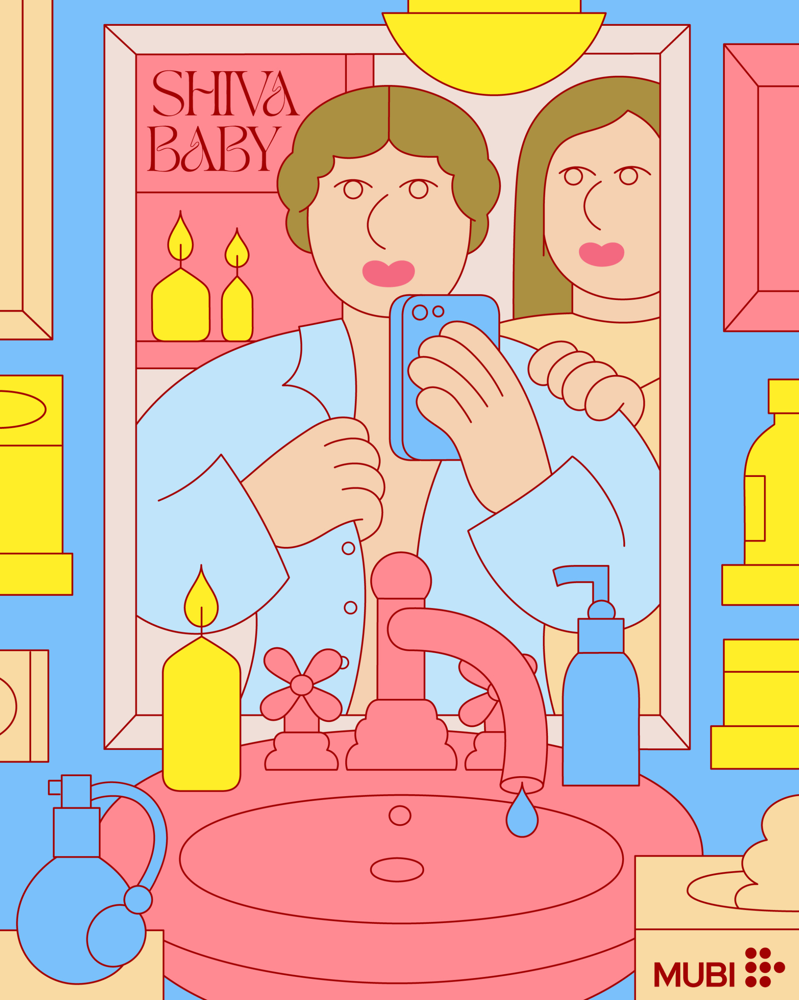

Martina Paukova
Descrizione dell’Artista
L'illustratrice berlinese Martina Paukova ama dilettarsi nelle sfumature colorate dei momenti quotidiani. "Il mio lavoro consiste in scene banali quotidiane e personaggi allampanati, spesso con espressioni perplesse e acconciature datate, seduti dietro al computer o sorseggiando un caffè", dice. "Mi piace esplorare e modellare il quotidiano, l'imbarazzante e il flessibile." Il lavoro di Martina è diventato molto popolare negli ultimi due anni, vedendola creare immagini divertenti e piene di sorprese in una tavolozza di marchi con motivi ispirati a Memphis per un elenco sempre più impressionante di clienti.
Illustrazioni


